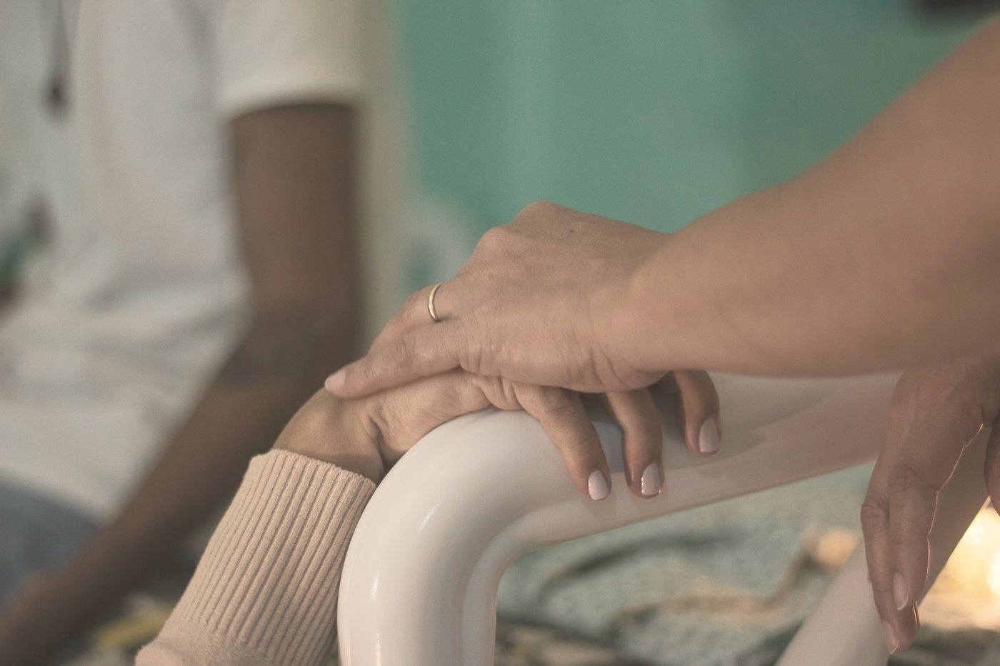
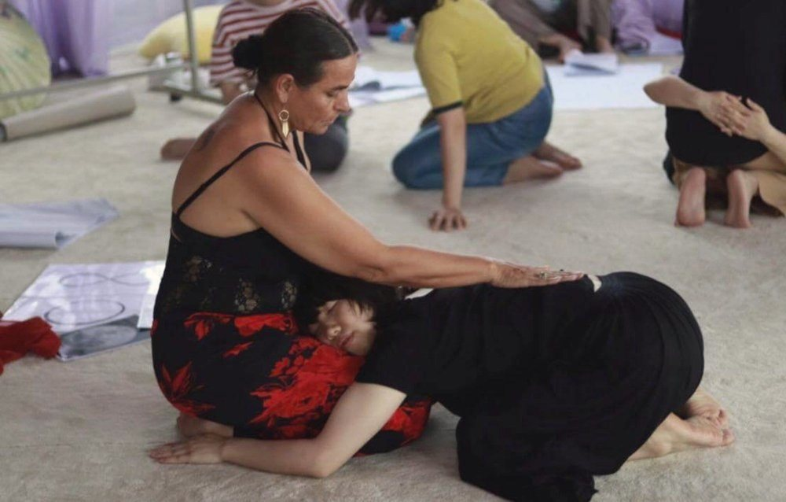
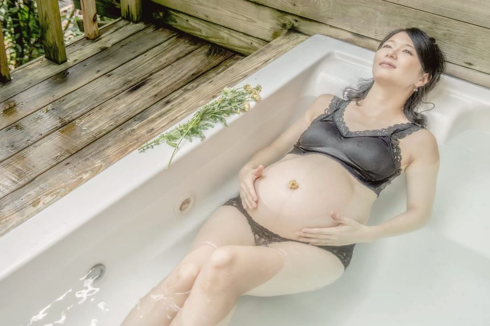

這股風潮，從哪裡來
在台灣，媒體用「優雅生產」「不再唉唉叫」來形容打減痛分娩的生產，網路文章裡甚至有「無痛吃到飽」的說法。PTT 媽媽版早在 2018 年就有一篇分享，標題叫〈優雅的生產之徹底的無痛分娩〉。減痛分娩（硬脊膜外麻醉）在台灣健保不給付，自費大約七千到一萬多元。全國使用率沒有官方統計，有醫院的資料顯示，2019 年自然產的媽媽裡有 44% 使用。
在我現在住的日本，常見的是「計画無痛分娩」（計畫性減痛分娩）：先在門診排好日期，前一天住院，當天早上用藥物催生，再打減痛分娩。東京都從 2025 年 10 月起，每位產婦最多補助 10 萬日圓，當作少子化對策的一環。
一件事變得普遍，不代表它不好。但當它被包裝成「優雅」「方便」，我們就更需要知道，包裝底下有什麼。
支持的一方，說得有道理的地方
- 它真的很能止痛。Cochrane 系統綜述（2018）發現，減痛分娩比鴉片類止痛藥有效得多，需要再追加止痛的人只有約十分之一。WHO 2018 年的建議是：健康的產婦想要止痛時，依她的意願可以使用。
- 隨機試驗沒有發現它會增加剖腹產。這一點常被誤傳，我想說清楚。
- 有醫療需要時，它可能是一種保護。蘇格蘭 56 萬多名產婦的研究（BMJ 2024）發現，打減痛分娩的媽媽，嚴重併發症少約 35%。不過這個差異主要出現在早產、和有醫療理由需要打的媽媽身上；足月產的媽媽，沒有看到明顯差別。
- 「打了孩子比較容易自閉症」的擔心，後來被否定了。2020 年一篇研究引起很多恐慌，但之後加拿大和丹麥三份大型研究，加起來近百萬名孩子，用兄弟姊妹互相比較後，都沒有發現關聯。
- 很多媽媽真的被它幫助了。長時間催生之後，是減痛分娩讓她睡一下、恢復力氣，最後能把寶寶推出來；也有第一胎痛到很受傷、第二胎選擇打，覺得這次被好好對待了的分享。
- 羞辱，也是真的。日本有「お腹を痛めて産んでこそ母親」（肚子痛過生下來，才算母親）的說法，讓選擇減痛的媽媽背著罪惡感。美國婦產科醫學會（ACOG）的立場是：沒有醫療上的禁忌時，產婦想止痛，本身就是足夠的理由。
常聽說「打減痛分娩比較不會產後憂鬱」。有的研究看到這個訊號，也有統合分析發現沒有差別，而且都是觀察研究。目前我只能誠實地說：還不知道。
看不見的那一面：一個介入，常帶來下一個
減痛分娩不是一個單獨的動作。打下去之後，通常要待在床上、裝連續胎心監測、打點滴，可能還要放導尿管。Cochrane（2018）發現，打減痛分娩的媽媽產程較長、較常需要人工催產素；用產鉗或真空吸引的機率也較高，不過在用現代低濃度麻醉的研究裡，這個差異已經不明顯。
台灣助產學會理事長高千惠在 2023 年受訪時也提到：下半身麻醉後，產婦可能使不上力，接著就可能要推肚子、剪會陰、真空吸引。而台灣的會陰切開率，本來就約有七成。
非醫療理由催生的初產婦，後面發生了什麼
澳洲新南威爾斯 47 萬多筆生產資料（觀察研究）
資料：Dahlen HG 等（2021）BMJ Open。觀察研究，相關不等於因果；新生兒死亡率兩組沒有差異。
這也是日本「計畫分娩」最需要被看見的地方：催生和減痛綁在一起，介入從第一分鐘就開始了。
身體自己的那套系統
生產時，身體會分泌催產素讓子宮收縮，分泌腦內啡（身體天然的止痛荷爾蒙）讓媽媽撐過一波又一波。Sarah Buckley（莎拉・巴克利）2015 年整理的研究指出，打了減痛分娩後，媽媽自己的催產素可能下降，所以常需要補上人工催產素。
- 人工催產素與產後出血：法國 106 家醫院的研究（BMJ Open 2011）發現，產程中用催產素的媽媽，嚴重產後出血的風險約 1.8 倍，劑量越高越明顯。
- 發燒：打減痛分娩的初產婦，約 19% 在產程中發燒（Pediatrics 2012）。媽媽燒得越高，寶寶出生後越可能需要呼吸協助、Apgar 分數較低。沒有發燒時，打不打沒有差別。
- 寶寶的第一個小時：一份 63 人的小型研究（Birth 2015）看到，減痛分娩裡的 fentanyl（鴉片類止痛藥）和催產素劑量越高、時間越長，寶寶出生後第一小時肌膚接觸時，吸到奶的機率越低。母乳哺育的研究整體並不一致：23 篇研究裡，12 篇發現不利、10 篇沒有影響。
- 不一定有效：約 10–20% 的人止痛效果不完全，需要調整或重打。
- 少見但要知道：不小心刺破硬脊膜時，可能出現嚴重頭痛；少數人的頭痛和腰痛，會持續一年以上。
這些大多是觀察研究，相關不等於因果。但它們都指向同一件事：生產是一整套環環相扣的系統，動了其中一環，其他環也會跟著動。
「方便」，是誰的方便？
日本一篇計畫性減痛分娩的醫院報告，目標寫得很直接：讓生產在白天班結束。也有醫院的說明書寫著：不在排定的日子入院，原則上就無法提供減痛分娩。
2017 年，日本大阪、神戶、京都接連發生減痛分娩後產婦死亡或重度障礙的事故，專家指出，這幾家診所都是一位醫師獨自應對。日本是在那之後，才建立全國的安全體制。台灣這邊，2025 年底也有知名診所因為找不到全職的麻醉醫師，宣布暫停接生。
支持計畫性催生的人，常引用美國的 ARRIVE 試驗（NEJM 2018）：低風險的初產婦 39 週催生，剖腹率 18.6%，等待自然發動的是 22.2%。但這個試驗只有約 27% 符合資格的人同意參加，而且在教學醫院進行；之後美國整體的剖腹率，並沒有明顯下降。
至於日本、台灣常見的「排日子＋催生＋減痛」，我找不到任何全國性的研究或隨機試驗。我們其實還不知道，它整體帶來的是什麼。
我心疼的是：當「方便」很大一部分屬於醫院的排班和人力，代價卻常常落在媽媽和寶寶身上。
兩邊的媽媽，說的都是真話
我讀了台灣 PTT、Dcard，日本的知恵袋、ママスタ，和英國的 Mumsnet 上的分享，以下是摘要，都是個人經驗：
打了，覺得值得
- 痛到哭，打完睡了一覺，醒來沒多久就生了
- 長時間催生後，終於能休息，最後有力氣推
- 產後恢復快，照顧寶寶比較輕鬆
- 第一胎自然產太苦，第二胎打了，很滿意
打了，覺得失去了什麼
- 39 週催生，打了之後不能下床、產程很慢、中途發燒，前後快 48 小時；自己停掉減痛，才終於有便意
- 不知道怎麼用力，被壓肚子、真空吸引，撕裂傷很嚴重
- 效果不完全，還是全都感覺得到，卻被限制在床上
- 下一胎沒打，覺得更完整、更有成就感
日本的媽媽論壇上，也有人問：「是不是選了無痛，才受到懲罰？」看到這句，我很心疼。兩邊的經驗都是真的，所以誰都沒有資格羞辱另一邊。
疼痛和受苦，不是同一件事

美國資深陪產教育者 Penny Simkin（潘妮・辛金）說，疼痛不等於受苦。減痛分娩能拿走身體的痛，卻拿不走恐懼、孤單和無助。
研究也指向同一個方向。一份整理 137 篇報告的系統綜述（Hodnett 2002）發現，一個女人怎麼記得她的生產，主要取決於她的期待、照護者給的支持、她和照護者的關係，以及她能不能參與決定。這些的影響，比疼痛和止痛本身還大。和生產創傷關係最深的，也是「失去掌控感」。
所以我想問的，不只是「要不要打」。而是：妳是被「優雅」「方便」推著走，還是清楚知道之後，自己選的？
我想對妳說
我兩次生產都沒有用止痛藥，第一胎在德國的生產中心，第二胎在台灣的家裡。那很痛，也是我人生中最有力量的時刻之一。我希望更多女人有機會認識自己身體裡的這份力量，所以我會鼓勵妳，把減痛分娩放在「真的需要時」的選項，而不是第一個選項。
在產前教育課裡，我們會練呼吸、舞動、按摩，也會學習其他自然的減痛技巧。生產時有人持續陪在身邊，本身就能減少止痛藥的使用（Cochrane 2017）。

照片：Maha Al Musa／EmbodyBirth™

但我也想跟妳說：選擇減痛分娩，不是逃跑，也不是失敗。當妳真正理解了它可能帶來的影響，最後還是選擇打，那是妳清楚知道後做的決定。我一樣會陪伴妳走完全程。無論什麼形式，帶著愛的意圖去生產，才是最重要的。🌿
想看減痛分娩各項影響的條列整理，可以看〈生產名詞與常見問題〉；想知道產前教育課可以怎麼安排，可以填〈產前教育問卷〉；也推薦〈為什麼要請陪產員？〉。或者，直接跟我聊聊。
資料來源
- Anim-Somuah M 等（2018）《Epidural versus non-epidural or no analgesia for pain management in labour》Cochrane CD000331（PubMed）
- World Health Organization（2018）Intrapartum care for a positive childbirth experience（WHO）
- Kearns RJ 等（2024）《Epidural analgesia during labour and severe maternal morbidity》BMJ（PubMed）
- 自閉症：Qiu C 等（2020）JAMA Pediatr（連結）；Wall-Wieler E 等（2021）JAMA Pediatr（連結）；Hanley GE 等（2021）JAMA（連結）；Mikkelsen SH 等（2021）JAMA（連結）
- 產後憂鬱：Li B 等（2023）Medicine（連結）；Almeida M 等（2020）BMC Womens Health（連結）
- ACOG Practice Bulletin No. 209（2019）Obstetric Analgesia and Anesthesia（PubMed）
- Dahlen HG 等（2021）催生與母嬰結果，BMJ Open（PubMed）
- Buckley SJ（2015）Hormonal Physiology of Childbearing, Childbirth Connection（摘要）
- Belghiti J 等（2011）產程中催產素與嚴重產後出血，BMJ Open（PubMed）
- Greenwell EA 等（2012）產程發燒與新生兒結果，Pediatrics（PubMed）
- Brimdyr K 等（2015）生產用藥與寶寶第一小時吸吮，Birth（PubMed）；French CA 等（2016）減痛分娩與母乳哺育綜述，J Hum Lact（PubMed）
- 減痛分娩失效：ESAIC 指引（2025）（連結）；硬脊膜刺破後長期頭痛與腰痛（IASP 摘要）
- Grobman WA 等（2018）ARRIVE 試驗，NEJM（PubMed）；批評整理：Evidence Based Birth（連結）
- Hodnett ED（2002）生產經驗與滿意度系統綜述，AJOG（PubMed）；Simkin P〈Comfort in Labor〉（PDF）；Bohren MA 等（2017）持續陪伴，Cochrane CD003766（PubMed）
- 日本：日本產婦人科醫會施設情報（2025）、厚勞科研報告（2017）；東京都無痛分娩費用補助（東京都福祉局）；計畫無痛分娩報告，《臨床婦人科產科》79 卷 12 期（連結）；川崎市立川崎病院說明書（PDF）；2017 年事故：神戶新聞（連結）；J-CAST（2016）（連結）
- 台灣：健康醫療網〈無懼疼痛 生產也能優雅漂亮〉（2020）（連結）；PTT BabyMother（2018）（連結）；衛福部病人安全資訊網醫病共享決策工具（連結）；台北慈濟醫院衛教單張（PDF）；聯合報 2023-05-12 助產學會訪談（連結）；聯合報 2025-11-29（連結）
- 媽媽們的經驗：PTT BabyMother（例）、Yahoo!知恵袋（例）、ママスタ（例）、Mumsnet（例）
本文為資訊整理，不構成醫療建議，也不能取代妳與醫師、助產師的直接討論。